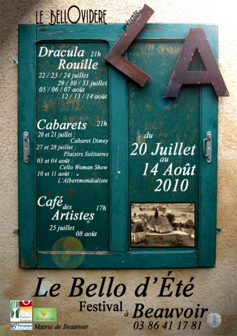

{kind=link}
Jacky Lignon revient nous voir accompagné du comédien Philippe Journo, pour nous entraîner dans l’univers du grand Bernard Dimey... !

Le Bello d’Été 2010
Bonjour !
Les nouvelles sont fraîches... L’été sera beau... Il y aura à voir... au Bello, à Beauvoir !
Le Bello d’Eté, le festival, est programmé du 20 Juillet au 14 Août 2010.
Cabaret Bernard Dimey
mardi 20 et mercredi 21 juillet à 21h
{kind=link}
Chloé Lacan
mardi 27 et mercredi 28 juillet 2010 à 21h
Chloé Lacan nous fera découvrir ses "Plaisirs Solitaires".
La culottée Chloé, bien dans ses bottes, bien dans son époque, émoustille nos yeux et nos oreilles... Les Francofans, avril 2010
{kind=link}
Le Cello Woman Show
mardi 03 et mercredi 04 août 2010 à 21h
Katrin Waldteufel, une chanteuse déjantée accompagnée d’un violoncelle égocentrique et réciproquement, nous présentera son "Cello Woman Show".
Prix Cité Chanson Le Mans 2010
{kind=link}
L’Albertmondialiste
mardi 10 et mercredi 11 août 2010 à 21h
Albert Meslay, pataphysicien reconnu par la critique et ancien chroniqueur sur France Inter nous fera part de ses questionnements absurdes et empreints de bon sens dans "L’Albertmondialiste".
On est dans le burlesque cérébral pur. Ce méli-mélo n’appartient qu’à Meslay, passé maître dans l’art d’affoler la boussole du prétendu bon sens. Le Canard Enchaîné
{kind=link}
Les Cafés des Artistes
dimanche 25 juillet 2010 à 17h
dimanche 08 août 2010 à 17h
Le dimanche, changement de point de vue avec des artistes à votre pied...dans une ambiance apéritive !
Le 25 juillet, première atmosphère avec "Les Filles du Bord de Scène" en accordéonite aiguë les pieds dans l’herbe version guinguette... et un match d’improvisation théâtral truqué, fomenté par l’équipe du Bello !
Le 08 août, changement d’ambiance avec la musique classique du Trio Forlane avant une deuxième session d’improvisation contrefaite et fière de l’être.
{kind=link}
Dracula Rouille
jeudi 22, vendredi 23, samedi 24 juillet 2010 à 21h
jeudi 29, vendredi 30, samedi 31 juillet 2010 à 21h
jeudi 05, vendredi 06, samedi 07 août 2010 à 21h
jeudi 12, vendredi 13, samedi 14 août 2010 à 21h
L’odeur de l’adrénaline flotte en suspension dans l’air. C’est l’heure de la chasse... ! Et pourtant Dracula se la coule douce... Il boit au verre, il n’a plus le goût à rien. L’immortalité lui pèse.
Un spectacle à déguster à sang pour sang ... Où il faut rire avec les dents serrées et la gorge bien calfeutrée !
A voir en famille à partir de 10 ans...